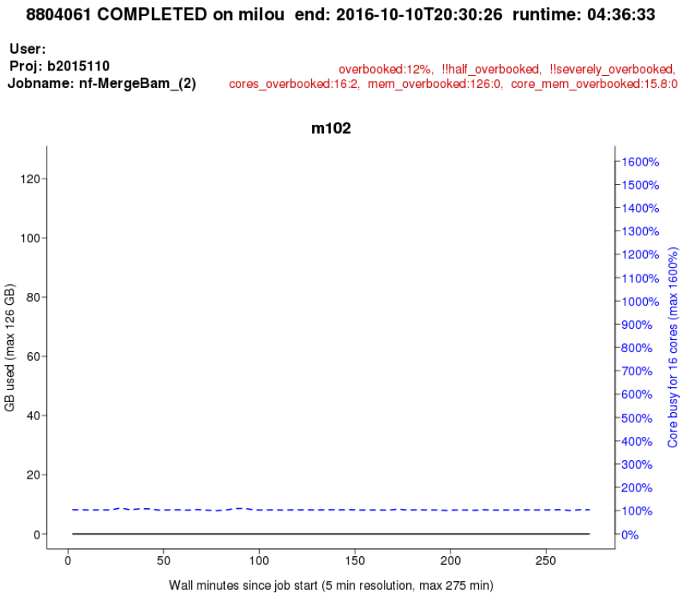
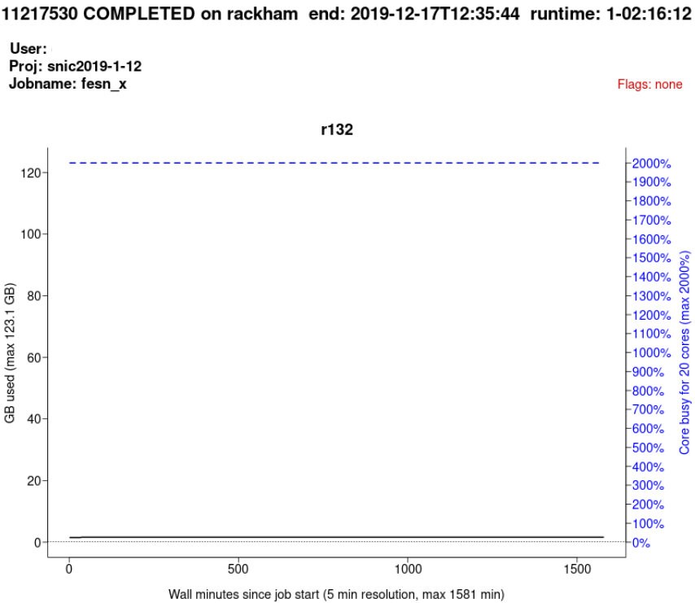

Efficient jobs¶
Learning outcomes
- Practice using the UPPMAX documentation
- I can see the CPU and memory usage of jobs
- I can read a
jobstatsplot - I can create a
jobstatsplot - I understand how to set up jobs efficiently
Want to see this session as a video?
Watch it on YouTube here.
For teachers
Teaching goals are:
- Learners have practiced using the UPPMAX documentation
- Learners have seen the CPU and memory usage of jobs
- Learners have read a
jobstatsplot - Learners have created a
jobstatsplot - Learners have discussed how to set up jobs efficiently
Lesson plan:
gantt
title Efficient jobs
dateFormat X
axisFormat %s
section First hour
Course introduction: done, course_intro, 0, 10s
Prior : intro, after course_intro, 5s
Present: theory_1, after intro, 5s
Challenge: crit, exercise_1, after theory_1, 40s
Break: crit, milestone, after exercise_1
section Second hour
Challenge: crit, exercise_2, 0, 10s
Feedback: feedback_2, after exercise_2, 10s
SLURM: done, slurm, after feedback_2, 25s
Break: done, milestone, after slurmPrior questions:
- How to schedule jobs efficiently?
- What is the
jobstatstool?
Present:
- ?Show documentation
Why?¶
If everyone would use our computational resources effectively, there would be no queue.
From the UPPMAX documentation, original source unknown
Running efficient jobs allows you to run more jobs that start running faster.
Exercises¶
Exercise 1: reading a jobstats plot¶
- Read the UPPMAX
jobstatsdocumentation especially the 'effective use' section
Exercise 1.1: jobstats plot 1¶
See jobstats plot 1 below and answer these questions:
- How much cores should this user book?
- Why?

jobstats plot 1
Answer
The user should have booked 1 core: the memory use will work fine with 1 core and this matches the CPU usage exactly.
It may be that the program is set up incorrectly and that it can use multiple cores if set up correctly.
Exercise 1.2: jobstats plot 2¶
See jobstats plot 2 below and answer these questions:
- Did the job finish successfully?
- How much cores should this user book?
- Why?

jobstats plot 2
Answer
The job did not finish successfully, the OUT_OF_MEMORY error
indicites that.
How much cores the user should book is uncertain, we only know that it is more then currently used. One strategy is to double to amount of cores and finetune after a successful run.
Exercise 1.3: jobstats plot 3¶
- See
jobstats plot 3below and answer these questions: - How much cores should this user book?
- Why?

jobstats plot 3
Answer
We don't know. The user uses all CPU power perfectly and there is enough memory available.
The user may benefit from more CPUs, as the program may be CPU limited.
It may be that the program used is designed to use 20 CPUs maximally, hence scheduling 20 cores is perfect!
It may be that using 20 cores is a strategy of the user: using multiple cores always brings computational overhead and hence wasted CPU resources.
Exercise 1.4: jobstats plot 4¶
See jobstats plot 4 below and answer these questions:
- How much cores should this user book?
- Why?

jobstats plot 4
Answer
This seems to be the cleanest example of using the algorithm to use computational resources efficiently: the user needs 2 cores for memory and adds 1 for safely. The job is not clearly CPU limited.
Exercise 2: creating a jobstats plot¶
We are going to create a jobstats plot. For that, we need a job
to plot. Here we first look for a job, after which we plot it.
- Scan the UPPMAX
finishedjobinfodocumentation - Log in to Rackham.
- Why do we need to log in to Rackham to find jobs?
Answer
On Bianca, all projects are part of an independent, isolated virtual cluster, for security reasons. When working in a Bianca project, one cannot see anything of other projects.
Rackham does not have this: we can see all jobs submitted by all users. Hence, there are more visible jobs for us to look at.
- Find a job that has finished successfully that took longer than one hour.
Answer
Use any of the code snippets, for example How do I find jobs that have finished and took longer than an hour?:
Press CTRL-C to stop the process: it will take very long to finish.
- Read the UPPMAX
jobstatsdocumentation, create ajobstatsplot of that job
- View the
jobstatsplot. Use the UPPMAX documentation on 'eog' if you want to be fast :-)
- Was that a job that was set up well? If not, how should it be setup? Why?
- Does the quote at the start of this sessions ('If everyone would use our computational resources effectively, there would be no queue') apply to your job?